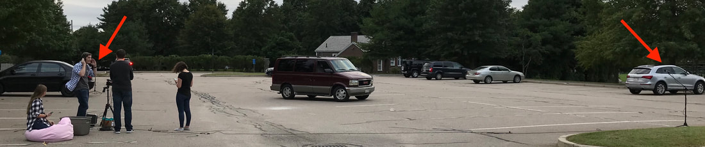

Determining Position of a Car with Doppler
"Donuts" in a parking lot, with a siren
Quantitative Engineering Analysis II Course Project
MATLAB code developed to take in two audio files from two sides of a parking lot and plot the path of a car moving in an arbitrary path within the lot. The car was outfitted with a siren for easy recognition of the original and doppler shifted pitches.
We began by analyzing audio from one microphone and a straight line path. The pitch noticeably drops and through a fourier transform we were able to find the new pitch and then mathematically determine the radial speed of the car using the difference in tone.
We then extended our algorithm by adding a second microphone source. With the second audio source, we could calculate the two radial speeds and by knowing the position of the two microphones relative to each other, we could find the direction that the car was moving (as long as it kept a constant, predetermined speed).

Using the new source data we took the car out again and drove in a circle in the parking lot. After feeding the audio recordings into our MATLAB algorithm, we received the plotted path below.
While quite jagged, a rough circle is illustrated. This project was a great learning experience for me as I was able to take a classroom concept and build it out with real world data in a matter of weeks. I also was able to brush up my function writing skills in MATLAB so that my pieces of the project could be folded in with my partner's for a successful final deliverable. I was personally responsible for the code that compared the relative pitches and determined probable velocity.